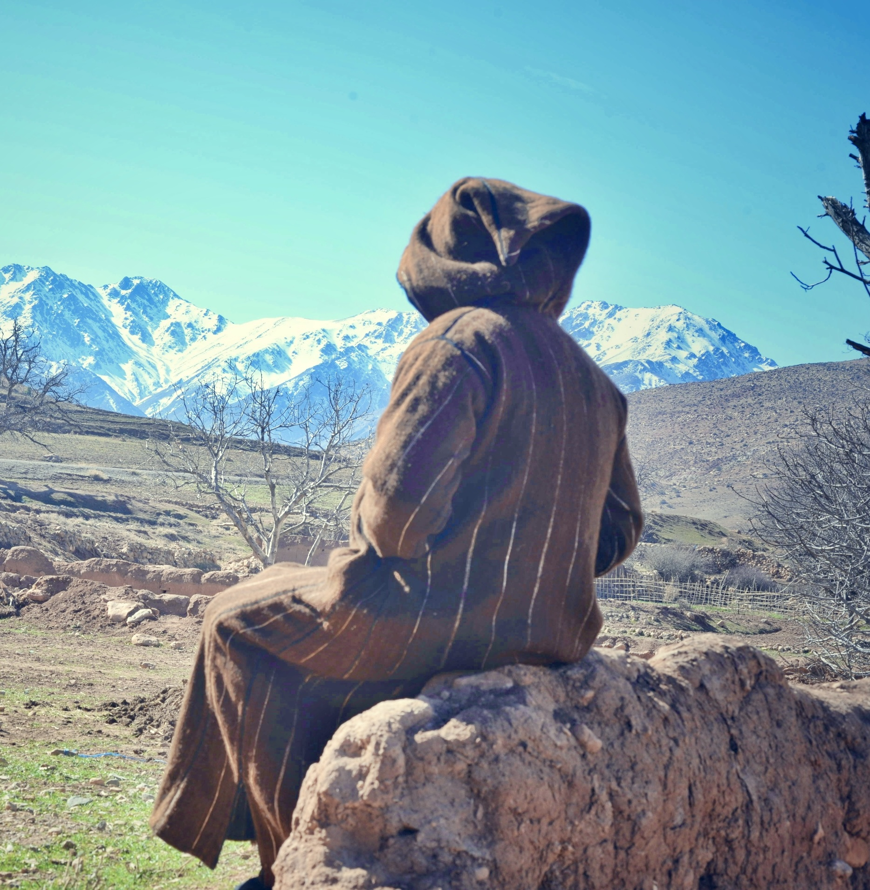

Découvrir Toulkine
Un village au cœur du Haut Atlas

Un village de montagne
Toulkine est un douar de montagne situé dans le Haut Atlas occidental, au sein de la commune d'Azgour, dans la province d'Al Haouz, région Marrakech-Safi.
À environ 70 kilomètres de Marrakech, le village se trouve dans un environnement montagnard caractérisé par des reliefs variés, des vallées, des plateaux et des sommets.
À une altitude comprise entre environ 1 700 et 1 726 mètres, Toulkine bénéficie d'un climat marqué par des hivers froids, parfois accompagnés d'importantes chutes de neige, et des étés plus tempérés.
Des paysages façonnés par la montagne
Le territoire de Toulkine se caractérise par la diversité de ses paysages naturels : reliefs rocheux, vallées, plateaux et sommets.
Ces paysages constituent un patrimoine naturel important et offrent un potentiel pour la randonnée, les activités de montagne et la découverte des milieux naturels.

Une communauté et des traditions vivantes
Toulkine compte 734 habitants répartis en 217 ménages, selon les données du RGPH 2024.
La vie locale s'organise autour de pratiques et d'activités qui participent à l'identité du territoire : agriculture familiale, élevage, artisanat et valorisation des ressources locales.
La langue et la culture amazighes occupent une place importante dans l'identité de la région.
Agriculture et élevage : des savoir-faire locaux
Agriculture familiale
Cultures saisonnières, céréales, arbres fruitiers et pratiques d'irrigation traditionnelles.
Élevage caprin
L'élevage, notamment caprin, contribue aux activités économiques et aux modes de vie des habitants.
Produits du terroir
Noix, amandes, pommes, miel — des produits locaux issus des savoir-faire ancestraux.
Artisanat
Tapis, tissage, laine — des productions artisanales qui témoignent du patrimoine vivant.